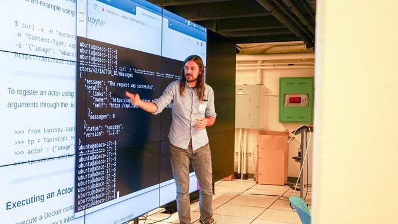

<h3><center>Distributed Computing Platforms For Open Science</center></h3>
<div>
<a href="software"></a>
</div>

<!--
<h3>Systems</h3>
The Cloud & Interactive Computing (CIC) Group builds distributed software systems and computing platforms to enable
research not previously possible.

<div>

</div>


<h3>Teaching</h3>
CIC is helping to train the next generation of computational scientists and engineers to make the discoveries of
tomorrow.
-->

<h3><center>Teaching and Professional Training</center></h3>
<div>
<a href="teaching"></a>
</div>
